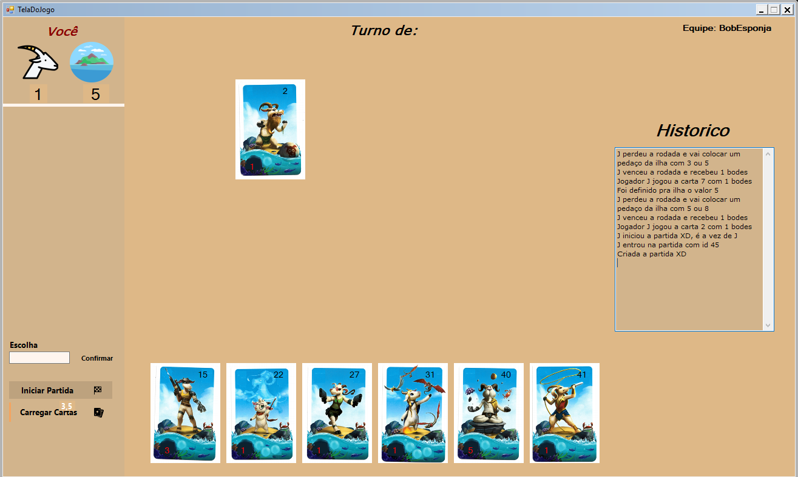
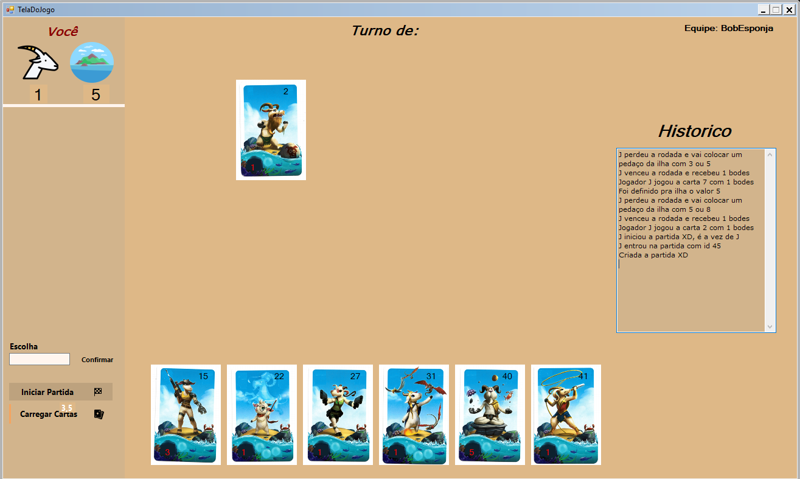

Interface
Para a interface do programa, optamos por algo mais simples, para ficar mais fácil de se encontrar as informaçãoes na tela, para o observador.
Para a interface do programa, optamos por algo mais simples, para ficar mais fácil de se encontrar as informaçãoes na tela, para o observador.
Como estratégia optamos por escolher a carta mais próxima da menor ja colocada na mesa, para termos mais chances de perder as primeiras rodadas, podem dessa forma escolher o tamanho da ilha mais favoravel para nossa situação.